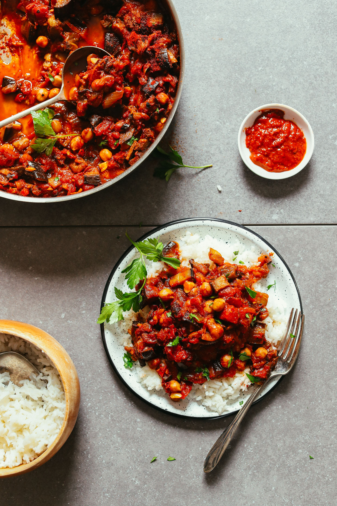

Eggplant Parmesan
Friends, I've been dreaming of this dish for so long and it's finally here after much toil and experimentation.
Ingredients
- 2 large eggplants,peeled and diced
- 1 large onion, chopped
- 3 cloves of garlic, minced
- 1 can of diced tomatoes(14.5 ounces)
- 2 tablespoons of tomatoes paste
- 1 teaspoon of dried thyme
- 1 teaspoon of dried basil
- 1 teaspoon of paprika
- Salt and pepper, to taste
- 2 cups of vegetable broth
- 2 tablespoons of olive olive
- Fresh parsley, chopped fo garnish
- Optional: 1 red bell pepper, diced and 1 can of chickpeas, drained and rinsed.
steps
- Heat the olive oil in a large pot over a medium heat.
- Add the onion and garlic and cook until the onion is soft and translucent, about 5 minutes.
- Add the eggplant to the pot and cook for another 5 minutes.stirring occasionally.
- Stir in the diced tomatoes, tomato paste, thyme, basil, paprika, salt, and pepper.
- Pour in the vegetable broth and bring the stew to a boil.
- Reduce the heat to low and let the stew simmer for 20-25 minutes, or until the eggplant is tender.
- If desired, add in the diced red bell pepper and chickpeas.
- Serve hot, garnished with fresh parsley.
Enjoy your delicious eggplant stew!
Visit Homepage